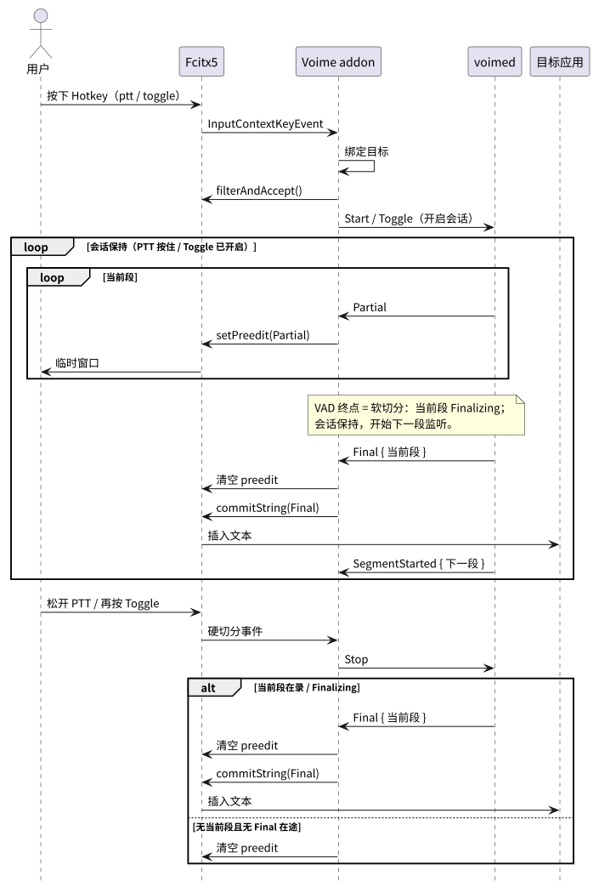
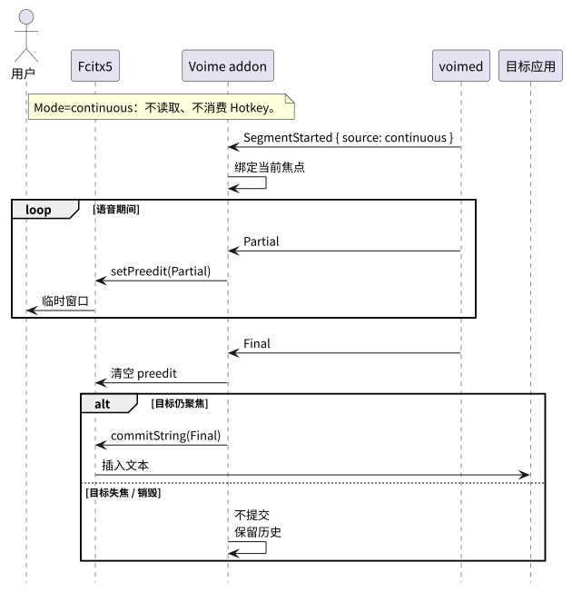
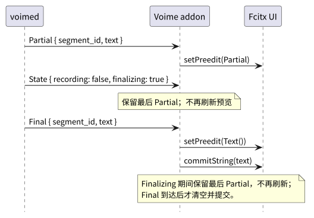
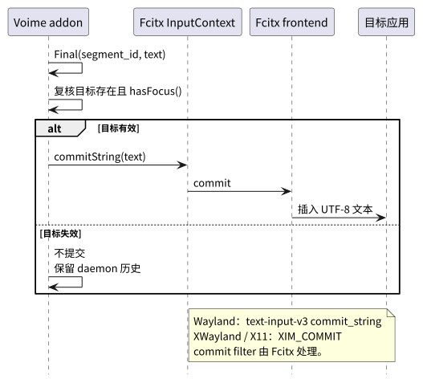

根：README USER CORE PROVIDER BUILD ｜ 本组件：README CORE PROVIDER BUILD
本文定义 Linux 用户在 Fcitx5 中看到、配置和触发的前端行为。协议消息形状见 voime-ipc USER；daemon 会话语义见 voimed USER；Fcitx API 见 PROVIDER。
| 术语 | 定义 |
|---|---|
| Voime addon | 运行在 Fcitx5 进程内的后台 addon，不注册输入法条目；负责热键、目标、临时窗口与提交。 |
| Fcitx5 | Linux 输入法框架；持有键盘、输入上下文、输入面板与提交路径。 |
InputContext | Fcitx 中代表一个可输入目标的上下文；提供 commitString、inputPanel、hasFocus。 |
InputContextKeyEvent | Fcitx 的按键事件；addon 在 PreInputMethod 阶段读取并决定是否消费。 |
PreInputMethod | Fcitx 事件管线中位于输入法处理之前的阶段；Voime 在这里匹配热键。 |
| 模式（Mode） | ptt / toggle / continuous；产品级定义见 根 USER §1。 |
| 热键（Hotkey） | addon 配置的唯一组合键；PTT 按住、Toggle 切换、Continuous 忽略。 |
| PTT 模式 | 按下热键开始采集，松开结束；静音可自动结束。 |
| Toggle 模式 | 第一次按热键开始，第二次按结束；会话期间 VAD 可连续切分多个段，没有语音时也保持空白临时窗口。 |
| Continuous 模式 | 忽略热键，VAD 自动切分语音段。 |
| Partial / Final | 临时结果 / 最终结果；产品级定义见 根 USER §1。 |
| 目标输入框 | 语音段开始时聚焦的 InputContext；最终文本只提交到该输入框。 |
| 临时文本窗口 | Fcitx 输入面板显示当前 Partial 的小窗口；由 InputPanel 的 preedit 渲染，不是自绘窗口。 |
commitString | Fcitx 的文本提交 API；无返回值，不能确认应用接受文本。 |
| 约定 | 内容 |
|---|---|
| Fcitx 依赖 | Fcitx5 必须运行，addon 必须加载；addon 不注册输入法条目，也不需要加入输入法组。 |
| 模式来源 | Mode 只来自 addon 配置；TUI 显示当前生效值，daemon 不提供独立模式设置。 |
| 热键语义 | ptt 按住说话；toggle 按一下切换；continuous 不使用热键。热键由 Fcitx 事件管线捕获并消费。 |
| 普通按键 | 未命中热键的按键完全交给 Fcitx；Voime 不转发、不缓存、不改变 keymap。 |
| 输入法切换 | Voime 不出现在输入法列表；Shift、Super+Space 等只影响普通键盘输入法。 |
| 热键冲突 | 热键不得与 Fcitx trigger / alt-trigger / enumerate / preedit 切换键或合成器常用绑定重叠。 |
| 目标绑定 | PTT / Toggle 在按键事件中立即绑定目标；Continuous 与 Toggle 续段在收到 SegmentStarted 时绑定当时聚焦的输入框。段内不再改变。 |
| 目标失焦 | 目标失焦或销毁时不提交；清空临时窗口；Toggle 会话同时停止录音；最终结果保留在 daemon / TUI。 |
| 临时窗口 | 录音期间显示 Partial；Toggle 会话在 Final、空段或 ASR 错误后显示空白窗口，直到再次按热键关闭；目标失焦、停止与 daemon 断线时清空。 |
| 最终提交 | 先清空临时窗口，再调用 commitString；提交到目标输入框，不向其他窗口注入。 |
| Continuous | VAD 自动开始 / 结束；不需要热键；TUI / ctl 仍可手动 Start / Stop 用于调试。 |
| daemon 断线 | addon 清空临时窗口、放行热键；按定时器重连；不阻塞普通输入。 |
| 无持久化 | 不保存音频、按键或识别历史到磁盘；配置只写 Fcitx 配置文件。 |
| 传输 | addon 直接连接 Unix socket；端点路径与权限契约与 voime-transport 的 Unix 实现一致。 |

ptt 按下开始、松开结束；toggle 按一下开始、再按一下结束。


segment_id 匹配的 Final。commitString 无返回值；Fcitx commit filter 与长文本拆分由 Fcitx 处理。# ~/.config/fcitx5/conf/voime.conf
Mode=ptt
Hotkey=Super+F2
Model=| 配置项 | 取值 | 默认 | 说明 |
|---|---|---|---|
Mode |
ptt · toggle · continuous |
ptt |
决定热键语义与 daemon 是否自动连续分段。 |
Hotkey |
Fcitx key 语法，例如 Super+F2 |
Super+F2 |
ptt 按住、toggle 切换、continuous 忽略；设为空可禁用。 |
Model |
Final 包目录名；空值表示跟随 active |
空 | 由 EnumAnnotation 动态枚举 Final 候选；显示 CPU / GPU 与不可用原因；选择后标记“待重启”。 |
fcitx5-configtool 的 Addons 页面或直接编辑文件完成；修改后重新加载 addon 配置或重启 Fcitx。~/.config/fcitx5/conf/voime 会在启动时迁移到 voime.conf。Model 只选择 Final；SenseVoice Preview 不由配置界面选择。动态枚举不可用时模型列表留空，不做固定 enum 或自由文本补偿。$XDG_RUNTIME_DIR/voime/voimed.sock 默认路径，不作为用户配置项。| 项目 | 契约 |
|---|---|
| 提交 API | fcitx::InputContext::commitString(const std::string &text)。 |
| 目标 | 语音段开始时聚焦的 InputContext；失焦 / 销毁不提交。 |
| 编码 | UTF-8 纯文本；中文、英文、标点与 emoji 原样提交。 |
| 长文本 | Fcitx frontend 按 UTF-8 字符边界拆分；Voime 不自行截断。 |
| commit filter | Fcitx 的提交过滤器会生效；Voime 不绕过、不二次转换。 |
| 无目标 | 不注入其他窗口；最终文本保留在 daemon 历史与 TUI。 |
| 临时窗口 | 提交前先清空；不使用客户端 preedit。 |
| 确认 | commitString 无返回值；不能确认应用是否接受文本。 |
消息形状与编码见 voime-ipc USER；本表只说明 addon 何时发送 / 期望什么。
| 消息 | addon 行为 |
|---|---|
Hello { role: Frontend, version, config } | 连接后发送；携带当前 Mode / Hotkey。 |
Configure { mode, hotkey } | 配置重载时发送；新模式在下一段生效。 |
ListModels / SetModel / RestartBackend | 配置页加载、保存或点击重启时发送；SetModel 只写 active，RestartBackend 在空闲时重建 Final。 |
Start / Stop | PTT / Toggle 热键触发；携带本地提示 ID 与 Hold / Toggle 来源。 |
SegmentStarted | 记录最终 segment_id；Continuous 与 Toggle 续段跟随当前焦点。 |
State | 更新 recording / finalizing；Idle 时清理目标与临时窗口。 |
Partial | 只处理当前段；显示到目标输入面板。 |
Final | 只处理当前目标段；清空临时窗口并提交。 |
Models / ModelSelected / BackendState | 刷新 Final 下拉与可用性；BackendState 为 Ready 前显示“待重启”，失败时保留旧选择并写日志。 |
Error | 角色 / 版本 / 非法消息 / busy / 模型不可用时断开重连或显示日志；推理错误在 Toggle 会话中重置。 |
Bye | 断开并等待重连。 |
| 情况 | 行为 |
|---|---|
| PTT / Toggle 按下 | 立即绑定 event.inputContext()；记录本地 segment_id 提示。 |
| Continuous 段开始 | 使用 mostRecentInputContext()；必须有焦点。 |
| Toggle 续段 | 仅当会话仍有效且原目标消失时，跟随当前焦点重新绑定。 |
| 目标失焦 | Toggle 发送 Stop 并清空；其他模式只清空，不提交。 |
| daemon 断线 | 清空部分状态、取消目标监听、复位 Toggle / PTT 标志；热键恢复为普通按键。 |
| 重连 | 使用定时器重连；未连接时重试，不阻塞 Fcitx 事件循环；具体间隔见 CORE §2。 |
| 错误 | 触发条件 | 处理 |
|---|---|---|
| addon 未加载 | 描述文件缺失、ABI 不匹配或库加载失败。 | Fcitx 日志 / voime doctor；不消费热键。 |
| daemon 不可用 | 无法连接 socket。 | 放行热键；按重连策略重试。 |
| 角色冲突 / 版本不匹配 | 已有前端连接或协议版本不一致。 | 断开并重试；日志记录；旧版本必须升级。 |
| Final 不可用 / 重启失败 | available=false、BackendState{Failed} 或 busy。 | 保留下拉旧选择；显示“待重启”或错误；不自动切换模型。 |
| 没有目标输入框 | 按键时没有焦点。 | 不开始语音段；不提交。 |
| 目标丢失 | 提交前失焦 / 销毁。 | 清空临时窗口；Final 保留历史。 |
| ASR 推理错误 | daemon 返回 inference。 | Toggle 会话重置为空白窗口；其他模式清理状态。 |
addon 不自绘 UI；临时文本窗口由 Fcitx UI 使用 addon 写入的 InputPanel preedit 渲染。
因此没有独立调色板：颜色、字体、圆角与位置由 Fcitx UI / 用户主题决定。
| 项目 | 契约 |
|---|---|
| 窗口 | Fcitx 输入面板；非自绘窗口，无按钮、候选或历史。 |
| 内容 | 当前 Partial 的纯文本；每次整体替换，不追加。 |
| 空窗口 | Toggle 会话在 Final / 空段 / 单段错误后写入单个空格的 preedit，保持面板存在但看起来为空。 |
| 关闭 | 停止、目标丢失、daemon 断线时写空 Text 并刷新。 |
| 客户端 preedit | 不使用 setClientPreedit / 客户端 preedit；最终文本只走 commitString。 |
| 无 UI | 当前 UI 不渲染 preedit 时不显示窗口；最终提交仍正常。 |